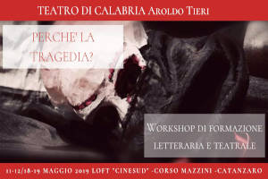

Workshop di formazione letteraria e teatrale a cura del professore Luigi La Rosa e del maestro Aldo Conforto (Teatro di Calabria Aroldo Tieri). Rivolto a studenti delle scuole superiori, docenti, appassionati e amatori di teatro, attori.
DESCRIZIONE
Perché la Tragedia? E' la domanda che ci viene rivolta più spesso dal pubblico che entra in contatto con le produzioni del Teatro di Calabria. Produrre e mettere in scena una tragedia può apparire, ad uno sguardo poco attento, un'operazione artistica poco audace, non in linea con la contemporaneità. Eppure, non esiste nulla di più universale e attuale del Messaggio trasmesso dal patrimonio tragico greco. Attraverso la Tragedia, è possibile comprendere i fondamenti del pensiero occidentale, le nostre radici culturali ed etiche, l'eterna lotta tra civiltà e barbarie. Conoscere le origini e i cardini della Tragedia è dunque fondamentale per una rinnovata comprensione del proprio passato e una maggiore consapevolezza della propria identità.
STRUTTURA DEL CORSO
SABATO 11 Maggio 2019 dalle 17:00 alle 19:00
- "La Tragedia: dal Mito al Logos"
- Focus teorico sulle origini della Tragedia; inquadramento filosofico letterario e focus sui tragediografi greci.
- Avvio alla didattica teatrale.
DOMENICA 12 Maggio 2019 dalle 17:00 alle 19:00
- "Il Coro: l'umanità in scena"
- Focus teorico sul ruolo e la funzione del coro tragico greco.
- Studio e didattica teatrale su estratti di "ORESTEA" di Eschilo e "ANTIGONE" di Sofocle.
SABATO 18 Maggio 2019 dalle 17:00 alle 19:00
- "Il Nunzio: la Tragedia nascosta"
- Focus teorico su ruolo e funzione del Messaggero nella tragedia greca.
- Studio e didattica teatrale su estratti di "PERSIANI" di Eschilo, "ANTIGONE" di Sofocle e "MEDEA" di Euripide.
DOMENICA 19 Maggio 2019 dalle 17:00 alle 19:00
- "TIRESIA: la cieca luce del Vero"
- Focus teorico sul ruolo e funzione dell'indovino nella tragedia greca.
- Studio e didattica teatrale su estratti di "EDIPO RE" e "ANTIGONE" di Sofocle.
WORKSHOP GRATUITO
11-12 e 18-19 Maggio 2019 LOFT "CINESUD" - Corso Mazzini (Catanzaro)
Si ringraziano gli autori dell'articolo e la redazione di TEATRODICALABRIA FACEBOOK
Perchè la tragedia - Workshop di formazione letteraria e teatrale
articolo pubblicitario di workshop di teatro del "Teatro di Calabria Aroldo Tieri" pubblicato nell'anno 2019
Aldo Conforto Teatro di Calabria Aroldo Tieri
Focus teorico su ruolo e funzione del Messaggero nella tragedia greca
Studio e didattica teatrale su estratti di "EDIPO RE" e "ANTIGONE" di Sofocle
Studio e didattica teatrale su estratti di "ORESTEA" di Eschilo e "ANTIGONE" di Sofocle

Riccardo Conforto
https://aldoconforto.github.io/teatro/riccardo-conforto-design-e-gestione-del-sito
{kind=link}